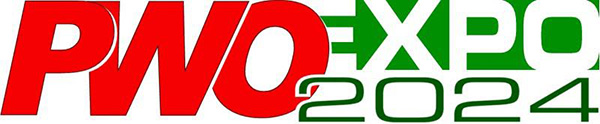
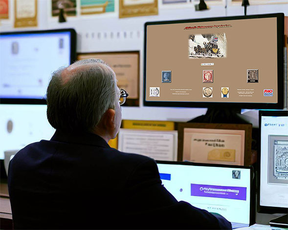

|
|

by Philatelic Webmasters for Philatelic Webmasters
Cancellation
On September 19, 2022, the PWO-EXPO 2022 was successfully concluded.
The exhibition exceeded all our expectations. After the closing of participants' registration on the July 9 2022 we counted 72 exhibits from 50 participants, representing 22 countries worldwide. All exhibits remain on display at the exhibition site for an indefinite period.
The Jury has awarded 12 Gold medals, 12 Silver medals and 21 Bronze medals. Each judge has done an outstanding job in its constructive, well-considered and impartial evaluation of competitive exhibits.

In order to analyze the results of this special event and to give time to the future participants to prepare for a new competition, the organizers decided that the next competition will take place in the year 2024.
We will announce on this website in advance any changes to the conditions of participation and the way in which the registration will be made. One thing remains certain however, namely that the future participation will be completely free of charge again.
Cancellation of the PWO-EXPO 2024
Unfortunately, the serious illness of the wife of one of the main organizers meant that PWO-EXPO 2024 had to be cancelled.
We will announce on this website if there will be a competition in 2025. We deeply regret the situation, but we have to accept what is happening.
.